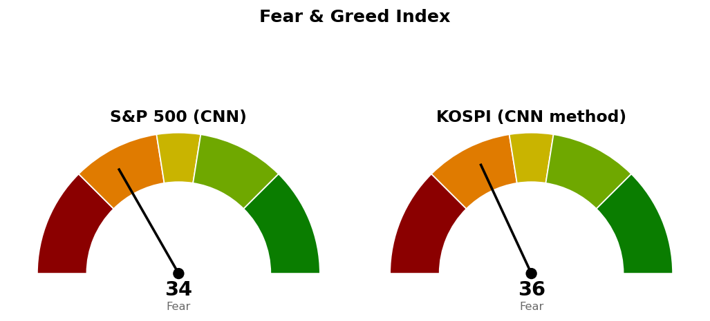

2026-11-10 장전 예측 4건: 4건 중 3건 적중(75.0%)
| 예측 | 근거 | 실제 | 판정 |
|---|---|---|---|
| S&P 500 종가 7,529 하회 | 다음 지지 7,529 — 11/9 종가 7,550, 10월 소비자물가 +0.4%(예상 +0.3%), S&P 500 선물 -0.57% 7,531 | 종가 7,521 (-0.38%) | 적중 |
| 나스닥 종합 종가 25,131 하회 | 다음 지지 25,131 — 11/9 종가 25,253, 나스닥100 선물 -1.07%, 변동성지수 21.06(+5.72%) | 종가 25,066 (-0.74%) | 적중 |
| 헬스케어 (XLV), S&P 500 대비 강세 마감 | 20일 초과수익 1위(+12.80%), 소비자물가 예상 상회로 S&P 500 선물 -0.57% | +0.29% 대 S&P 500 -0.38% | 적중 |
| 임의소비재 (XLY), S&P 500 대비 약세 마감 | 20일 초과수익 2위(+11.08%)지만 12월 0.5%포인트 인상 가능성 언급(월러 이사), 선물 -0.57% | +0.03% 대 S&P 500 -0.38% | 빗나감 |
US 최근 90일 누적 71건 중 55건 적중(77.5%) · 최근 20건 20건 중 17건 적중(85.0%)
XLY 약세 마감을 걸었으나 XLY는 +0.03%로 S&P 500(-0.38%)보다 0.42%포인트 높게 마감했습니다. 누적 기준 섹터 강세 예측은 15건 중 7건(46.7%), 섹터 약세 예측은 11건 중 9건(81.8%) 적중입니다.
직전 시황은 11/10 미국 장전 회차이며, 가격은 11/9 미국 마감 후 회차가 등록한 값입니다. 하방 갈래를 건 장전 판단은 맞았습니다.
| 직전 가격 | 판정 방식 | 11/10 결과 | 판정 |
|---|---|---|---|
| 나스닥 기준선 25,685 | 일봉 종가 상회 | 고가 25,287 · 종가 25,066 | 미충족 |
| 나스닥 다음 지지 25,131 | 일봉 종가 하회 | 종가 25,066 | 충족 · 하방 갈래 |
| 나스닥 그 아래 24,500 · 24,425 | 장중 저가 도달 | 저가 24,816 | 미도달 · 316포인트 위에서 멈춤 |
| 나스닥 취소선 24,262 | 일봉 종가 하회 | 종가 25,066 | 미충족 · 사다리 유지 |
| S&P 500 기준선 7,649 | 일봉 종가 상회 | 고가 7,544 · 종가 7,521 | 미충족 |
| S&P 500 다음 지지 7,529 | 일봉 종가 하회 | 종가 7,521 | 충족 · 하방 갈래 |
| S&P 500 그 아래 7,470~7,508 | 장중 저가 도달 | 저가 7,470 | 도달 · 구간 하단에서 멈춤 |
| S&P 500 사다리 7,314 · 7,113 | 장중 저가 도달 | 저가 7,470 | 미도달 · 미집행 |
| QQQ 손절 640 · 목표 702달러 | 장중 도달 | 저가 667.05 · 고가 680.95달러 | 둘 다 미도달 · 보유 유지 |
| XLV 190 · XLY 122달러 | 일봉 종가 상회 | 188.88 · 121.05달러 | 미충족 · 진입 없음 |
20일선·50일선은 지수이동평균, 200일선은 단순이동평균입니다. 경로를 말할 근거가 없어 방향을 말하지 않고 기준선과 두 갈래만 냅니다. 사다리는 지수 포인트로만 적습니다.
기준선과 다음 지지 모두 하루 평균 변동폭보다 멀어 한 세션 안에 닿기 어려운 거리입니다. 나스닥은 200일선 아래로 다시 내려왔습니다(-0.19%). 사다리는 남은 회차가 없고 두 회차 평가손익은 계좌 +0.05%입니다. 180일 박스(21,425~27,401) 안쪽 판정은 중립(지지 테스트 거래량 혼조, 저점 절하, 상승봉 대 하락봉 거래량비 1.02)입니다.
다음 지지는 한 세션 안에 닿는 거리이고, 기준선은 하루 평균 변동폭보다 멉니다. 180일 박스(6,475~7,828) 안쪽 판정은 중립(지지 테스트 매도 거래량 감소, 저점 절하, 거래량비 1.00)입니다. 현재가는 진입 자리가 아니며, 사다리 1차 7,314까지 기다립니다.
S&P 500 7,521이 200일 이동평균 7,331 위(+2.59%, 4/8부터)라 새 계획을 낼 수 있는 국면입니다.
| ETF | 등록일 | 현재 | 진입 | 손절 | 목표 | 상태 |
|---|---|---|---|---|---|---|
| Invesco QQQ (QQQ) | 2026-11-06 | 675 | 663 | 640 | 702 | 보유 중 (진입 2026-11-09) |
| 에너지 (XLE) | 2026-10-20 | 62.21 | 70.80 | 68.87 | 74.54 | 진입 대기 |
| 필수소비재 (XLP) | 2026-10-23 | 91.03 | 94.21 | 92.40 | 99.40 | 진입 대기 |
| 헬스케어 (XLV) | 2026-11-10 | 189 | 190 | 183 | 207 | 진입 대기 |
| 임의소비재 (XLY) | 2026-11-10 | 121 | 122 | 119 | 135 | 진입 대기 |
새 계획은 SPY 하나입니다.
SPY는 모멘텀형(저항을 종가로 되찾으면 그 방향이 이어진다는 전제)이지만 집행은 777달러 고정 목표 전량 매도이며, 진입~목표가 하루 평균 변동폭의 1.65배라 트레일링은 걸지 않습니다(2배 기준은 관행이며 정설이 아닙니다). 진입과 목표 사이에 766.27~770.00달러(피보나치 23.6% 되돌림 · 770 라운드)가 있습니다. 조건 점검은 9개 중 6개를 채웠고 미달은 20일선 위 · 이동평균 정배열 · 상대강도선 신고가입니다. 계좌 1% 위험 기준 비중 58.8%를 13% 상한으로 제한하며 746달러 손절 시 계좌 -0.22%입니다. 손절 폭은 진입가의 1.70%(하루 평균 변동폭의 1.18배)입니다.
상위 2개는 헬스케어 · 필수소비재입니다. 11/10 하루는 금융 +0.52%, 에너지 +0.44%가 가장 강했고 기술 -1.15%가 가장 약했습니다.
종목 발굴: 200개를 훑어 1차 20개, 구조 판정 12개 중 3개가 남았습니다(거래대금 미달 104개, 추세 미달 35개, 52주 고점 대비 위치 벗어남 23개, 지수 대비 상대강도 미달 9개, 이미 보고 있는 종목 9개, 추격 비권장 3개 탈락). 1순위 리제네론 (REGN)은 이 브리핑 뒤에 배치가 정식 리포트를 씁니다. 카디널헬스 (CAH)와 아이큐비아 (IQV)는 후보이며 리포트가 아닙니다 — 텔레그램으로 종목명을 보내면 리포트가 나갑니다.
| 항목 | 값 | 직전 대비 |
|---|---|---|
| 미국 경기선행지수 | 101.00 (9월) | 전월 대비 +0.05 · 직전 회차와 같은 값 |
| 한국 경기선행지수 | 102.53 (9월) | 전월 대비 -0.13 · 직전 회차와 같은 값 |
| 미 10년 명목금리 | 확정 4.88% (11/9) · 지수 시세 4.983% (11/10, 장중 5.021%) | 확정 +0.02%포인트 · 시세 +0.119%포인트 |
| 미 10년 기대물가 | 2.22% (11/9) | -0.01%포인트 |
| 미 10년 실질금리 | 2.66% (11/9) | +0.03%포인트 |
| 유가 (WTI) | 확정 99.64달러 (11/3) · 선물 86.50달러 (11/10) | 확정 갱신 없음 · 선물 -0.40% |
| 달러지수 (광의) | 121.88 (11/6) | 갱신 없음 |
| 변동성지수 (VIX) | 19.46 (11/10, 장중 19.29~21.61) | 전일 19.92 · -2.31% |
경기선행지수는 장기 평균을 100으로 놓고 경기 방향을 몇 달 앞서 보여주는 OECD 지표이며, 새 발표가 없어 해석을 바꾸지 않습니다. 11/9 명목금리 상승분(+0.02%포인트)은 기대물가가 내린(-0.01%포인트) 가운데 실질금리 상승(+0.03%포인트)에서 나왔습니다. 11/10 소비자물가 발표일의 10년 시세 상승(+0.119%포인트)이 실질금리와 기대물가 중 어디서 나왔는지는 확정치가 아직 없어 가르지 못했습니다. 이 절은 지수 기준선에 반영하지 않습니다.

S&P 500은 CNN 공식값이며 1주 전 23.5, 1개월 전 43.5였습니다. 가장 낮은 항목은 안전자산 선호 10.6, 모멘텀 13.2, 풋/콜 비율 16.2이고 가장 높은 항목은 주가 폭 50.2, 변동성 50.0입니다. 코스피는 CNN 방식을 한국 데이터로 재구성한 값이며 공식 지수가 아닙니다. 일곱 항목을 모두 썼고 기준일은 11/10이며, 가장 낮은 항목은 모멘텀 3.0, 변동성 14.2이고 가장 높은 항목은 주가 강도 78.0입니다.
| 날짜 (미국) | 이벤트 | 확인할 것 |
|---|---|---|
| 11/11 | 다음 세션 | S&P 500 7,470 · 7,649, 나스닥 24,500 · 25,685 대비 종가 |
| 11/12 | 신규 실업수당 청구 | 고용 · 10년 금리 시세 5% 부근 |
1. 매수 쪽 — 지수는 지금 가격에 살 자리가 없습니다. 나스닥은 남은 회차가 없고, S&P 500은 장중 저가로 7,314에 닿으면 계좌의 2%, 7,113에 닿으면 계좌의 2%를 매수합니다. 2. 나스닥은 일봉 종가 24,262 아래면 매수 계획 종료이고, 1차(25,131) · 2차(24,425)를 다음 세션에 전량 매도 (사다리 취소)합니다. 3. S&P 500은 일봉 종가 7,100 아래면 매수 계획 종료이고, 산 회차를 다음 세션에 전량 매도 (사다리 취소)합니다. 4. QQQ 보유 중 — 640달러 장중 도달 시 전량 매도 (손절), 702달러에서 전량 매도 (목표 도달). 5. SPY 진입 대기 — 일봉 종가 759달러 상회 시 계좌의 13% 이내로 진입, 746달러 장중 도달 시 전량 매도 (손절), 777달러에서 전량 매도 (목표 도달). 6. XLV 진입 대기 — 일봉 종가 190달러 상회 시 계좌의 13% 이내로 진입, 183달러 장중 도달 시 전량 매도 (손절), 207달러에서 전량 매도 (목표 도달). 7. XLY 진입 대기 — 122달러 / 119달러 / 135달러. XLP 진입 대기 — 94.21달러 / 92.40달러 / 99.40달러. XLE 진입 대기 — 70.80달러 / 68.87달러 / 74.54달러. 8. S&P 500이 일봉 종가로 200일선 7,331 아래면 위 ETF 계획의 신규 진입을 보류합니다. S&P 500 사다리에는 적용하지 않습니다.
다음 세션에 볼 것 — S&P 500이 일봉 종가로 7,470을 지키는지입니다.
ATR(하루 평균 변동폭): 최근 14일 하루 가격 변동폭의 평균.
지수이동평균: 최근 가격에 더 무게를 둔 평균.
단순이동평균: 일정 기간 종가를 같은 무게로 더해 나눈 평균.
상대강도지수(RSI): 최근 14일 상승폭과 하락폭의 비율로 과열·침체를 보는 0~100 지표.
트레일링: 가격이 오르는 만큼 손절선을 따라 올리는 청산 방식.
VIX: S&P 500 옵션 가격에서 뽑은 향후 30일 예상 변동성.